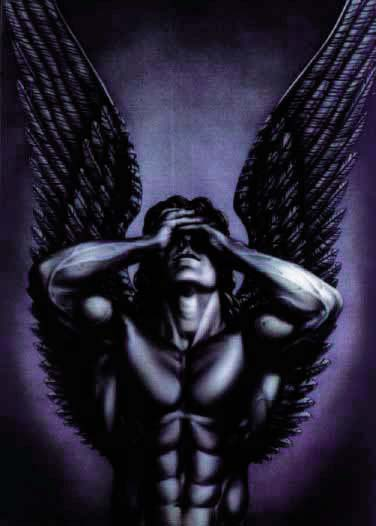

Forums galactiques > Assemblée Galactique : diplomatie officielle > Archives des présentations
Pages : 1 2 ... 22 23 24 ... 63 64
| C.H.0.A.M. Respect diplomatique : 202  17/09 ETU 09:48 | Score : 5 Détails Dans l’ambiance tumultueuse de l’assemblée, un hologramme apparaît doucement.
Dans une architecture difficile à définir pour quelqu’un n’ayant pas l’habitude de voir un tel décor remplit d’étrangeté, se tient une silhouette fine, vêtue élégamment, mais tout aussi inhabituelle que le lieu qui l’entoure. Et pourtant, elle semble en adéquation avec ce qui l’entoure. Un voix rocailleuse et sifflante se fait entendre, mais comme atténuée, cela ressemble plus a un murmure difficilement audible, incompréhensible. Puis après quelques secondes, une voix monocorde et métallique se fait entendre, clairement cette fois-ci. -"Peuples d’Espérance, Nous venons vous adresser nos plus respectueuses salutations." Quelques murmures se font entendre à nouveaux, vite couvert par l’appareil de traduction. -"Nous ne souhaitons pas être porteur de conflits. Notre venue en ces lieux est essentiellement pacifique, et nous espérons pouvoir entretenir de bonne relation avec tous." La silhouette aux trait indéfinissable sembla rire un instant, mais était-ce vraiment un rire, ou une marque de respect ? La voix reprit : -"Nous sommes fiers et heureux de pouvoir partager votre compagnie. Veuillez, peuples d'Espérance, recevoir tout notre respect." Un dernier murmure se fit entendre, l’hologramme commençait déjà à diminuer d’intensité. On put apercevoir, en l’espace d’un instant, la silhouette se détourner et s’éloigner lentement, avant que l’hologramme ne s’éteigne. | ||
| Rosa L. Respect diplomatique : 1595  19/09 ETU 09:50  | Score : 7 Détails A ce moment précis, une petite femme pleine de bonne volonté s'adressa à l'assemblée :
Moi, Rosa L., illustre descendante de la révolutionaire marxiste, projetée en Espérance par une faille dans l'espace-temps, je ne renie pas mes valeurs familiales, et compte bien convaincre tous les commandant(e)s que l'Egalité des Travailleurs, le partage des Richesses, et la Solidarité vers l'Objectif Commun du Grand Soir sauvera la Galaxie ! Pour avoir les moyens de mes ambitions, et Lutter contre l'Oppresseur Libéral Capitaliste, je suis même devenue guildienne... Ce petit bout de femme se retira en touchant sans cesse son médaillon | ||
| Horohoro Respect diplomatique : 1130  19/09 ETU 16:32 | Score : 0 Détails Ce matin,le commandant Horohoro s'était rendu compte qu'il n'était jamais passé par la salle des présentations,et décida de réparer cet oubli.
"euh,bonjour...pour ceux qui ne me connaissent pas (sûrement une minorité,vu le nombre de c***eries que j'ai déjà faites^^),je suis le commandant Horohoro! Salut à tous et bonne journée..." | ||
| Blackwarrior Respect diplomatique : 476  19/09 ETU 17:39 | Score : 2 Détails entrant dans la salle vide
eccho...eccho...ccho...cho..hoo..ooo coool cette salle... ça sert à quoi? désolé, j'pouvais pas m'en empêcher ^^ | ||
| Horohoro Respect diplomatique : 1130 19/09 ETU 17:41 | Score : 0 Détails "a quoi ça sert"?devine...^^
| ||
| Blackwarrior Respect diplomatique : 476 19/09 ETU 17:46 | Score : 1 Détails Vois un boulet qui rentre, et ainsi perturbe l'accoustique de la salle
Raa! mais tu vois pas que tu gène là !? Aller, ouste, tu balais! | ||
| Horohoro Respect diplomatique : 1130 19/09 ETU 17:48 | Score : 1 Détails euh,blacky..tu pollue tout autant que moi,là...
| ||
| smocky Respect diplomatique : 268  19/09 ETU 18:17 | Score : 1 Détails Le Cdt Smocky entra dans la salle, s'interposa entre nos deux Cdt bien connu, salua l'heureuse arrivé des nouveaux commandants,C.H.O.A.M. et Rosa.L, en leur souhaitant bonne chance en Esperance et pris les deux compères par les épaules et leur proposa de payer sa tourné au coffe shop du Cdt Ash..ce qui visiblement ne leur deplu guère..et ils purent ainsi liberer la place pour les prochaines présentations..
| ||
| Némésis Respect diplomatique : 1252  19/09 ETU 20:39 | Score : 3 Détails /*/*/*/*/
... mais que s'ignifiait ... C.H.O.A.M. ? ... ... son ... "représentant" était ... un homme ? ... une femme ? ... ... Mystérieuse Organisation ... /*/*/*/*/ | ||
| Chris Respect diplomatique : 68  20/09 ETU 10:49 | Score : 4 Détails Un homme entra dans la salle. Il était assez petit mais on voyait qu'il valait mieux ne pas se frotter a lui. Il fesait une mine sombre.
Et la, tout a coup, trois musiciens arrivèrent et commencerent a jouer. Le jeune homme commença a danser et dit : Bonjour, je m'apelle Chris Peace !!! Je suis un commandant d'Esperance Yeah !!! J'ai pas de BHA ni d'armes ioniques Yo !!! J'ai juste des frégates, et des croiseurs !!! Cool !!! Et des chasseurs bombardiers et plein de kamikazes !!! Yo men !!! Et pis des sondes d'exploration et des navettes d'explorations !!! Cool man !!! Mes frégates, ellles sont pas légions, Yeah men !!! J'ai des invasions, des portenefs et des combats !!! Cool man !!! J'ai des transporteur, j'ai hyperfusion et plein de planète !!! Yeah boy !!! Je suis dans un système que tout le monde connait !!! Yo girl !!! J'ai déjà été en justice !!! Cool girl !!! En plus c'était même pas ma faute !!! Peace men !!! Voilà, en fait, Chris c'est MOI !!!! | ||
| Eretica Respect diplomatique : 1  21/09 ETU 17:48 | Score : 0 Détails un grand homme arriva dans la salle. Il portait une toge noire. Il releva sa capuche.
Bonsoirs commandants, je viens d'une lointaine galaxie... Je susi heureux de faire vos connaissances. | ||
| Horohoro Respect diplomatique : 1130 21/09 ETU 17:52 | Score : 0 Détails décris un peu plus^^
| ||
| Eretica Respect diplomatique : 1 21/09 ETU 20:08 | Score : 2 Détails Une ombre arriva et se placa devant l'assemblée
"Bonsoir à tous, je me nomme Eretica, fils d'Heinrich Requiem Kemmler. J'ai rejoins votre galaxie afin d'échaper à un orage electromagnetique." L'assemblée regardait l'ombre d'un air etrange. L'homme retira sa capuche. Il avait les cheveux long, lisse et blanc. Ses yeux luisait d'un bleu etonament claire et sa peau laissait presager qu'il n'avait pas vu le soleil depuis des siecles. "J'espere qu'ensemble nous pourrons reconstitué les anciennes alliances et vivre en paix" | ||
| Métatron Respect diplomatique : 9  24/09 ETU 13:53 | Score : 9 Détails Un immense vaisseau, la coque reluisante, brillant dans le soleil matinal, vint se poser sur la piste d'atterrissage de la Capitale. Tous les yeux se tournèrent vers cette merveille de technologie qu'était l'appareil. Resplendissant, un ange noir en train de pleurer était peint de chaque côté de la coque lisse et blanche.
Très vite, les badaux se mirent à poser des question. Qui cela peux il être? Mais Ou est la porte, comment font les passagers pour sortir? Ce vaisseau est sublime, mais qui le conduit? Dans un cliquetis discret, une plaque ronde coulissa sur le dos de l'appareil, laissant dans l'attente la foule qui s'était amassé. La première chose qu'ils aperçurent fut deux immenses ailes noires, luisantes elles aussi. Elles se déployèrent et la foule put apercevoir l'Archange. Battant des ailes, il vola jusqu'au sol, où il se posa avec légereté. Deux autres anges sortirent de l'appareil, plus petits et blanc, eux. Ils tenaient dans leurs bras d'immenses hallebardes. L'Archange Noir, lui, portait une gigantesque épée aussi noire que ses ailes. Ils toisèrent la foule, puit d'un pas determiné, se frayèrent un chemin jusqu'a l'Assemblée. Arrivés dans la Grand-Salle, ils se dirigèrent vers l'estrade, où l'Archange Noir prit la parole: "Je suis l'Archange Noir Métatron, ex-Archange Blanc au service du Dieu unique, renvoyé de l'Eden par L'Eternel, désormais au service de moi même et de l'Absolution que je répend. Voici mes Capitaine, l'Ange Sylvana et l'Ange Sylvain. Souvenez vous de nos noms." Levant la main, Métatron fit explosé par le biais de sa magie un des vitraux de la Grand Salle. Prenant leurs envols, les Trois Anges quittèrent la salle d'une manière spectaculaire... | ||
| Horohoro Respect diplomatique : 1130 24/09 ETU 15:27 | Score : -1 Détails s'envolant aisément dans les airs,le commandant Horohoro rattrapa les 3 anges.
"Bonjour,chers commandants. Je me présente:Commandant Horohoro amano,fondateur de la Fondation du Ciel Sacré. Si vous avez quelque chose à demander,adressez vous à moi!" Et le commandant s'envola dans la noirceur de l'espace, en direction du siège de sa fondation. | ||
| Magic-Star Respect diplomatique : 3 25/09 ETU 12:43 | Score : 3 Détails Je me présente je suis le grand commmandants Magic-Star.
Mon empire ne fait que débuter dans cette vaste galaxie. Je vous remerci de m'avoir ecouter et je repars donc vers mon royaume. | ||
| Weyland-Yutani Corp Respect diplomatique : 26  25/09 ETU 14:24 | Score : 3 Détails *** Un homme arrive au conseil, il est habillé dans un costume d'une coupe impeccable, sombre, distingué... Du sur-mesure à tous les coups ***
Bonjour je me présente. John Weyland, C.E.O. de la Weyland-Yutani Corp. Notre Corporation à dans l'espoir de lier avec vous tous de profitables relations. Nous sommes occuper à terra former plusieurs planètes afin de consolider notre base de production et pouvoir fournir en quantité suffisante nos futurs clients. Nous sommes près à fournir tout client se montrant respectueux de la Corporation, nous vous garantissons la qualité de nos produits et l’assurance que tous ce qui est humainement possible sera fait pour vous satisfaire. Dans l’espoir de lier des relations avec un maximum d’entre vous nous laissons notre code Com-X. N’hésitez pas à nous envoyer vos offres et demandes. Weyland-Yutani Corp. « Building Better Worlds » | ||
| PH3NX Respect diplomatique : 3 25/09 ETU 17:37 | Score : 3 Détails Salutation à tous.
Je suis PH3NX, le Phénix galactique, je viens d'arriver sur ma planéte encore vide. Faible pour l'instant mais plus tard je risquerais bien de rentrer dans la liste noire des plus puissantes armées, enfin je l'espère... Voila je préfere garder tous mes secrets pour moi, et si vous voulez plus d'informations envoyez moi un petit message. A bientôt. | ||
| artemis le sombre Respect diplomatique : 145  26/09 ETU 17:30 | Score : 0 Détails C'est bien au moins y en a qui font des efforts en [RP] ! :)
| ||
| Naruse Respect diplomatique : 1178  26/09 ETU 18:32 | Score : 1 Détails Euh...oui, ça n'a pas l'air d'être votre cas par ailleurs.
|
Pages : 1 2 ... 22 23 24 ... 63 64
Forums galactiques > Assemblée Galactique : diplomatie officielle > Archives des présentations